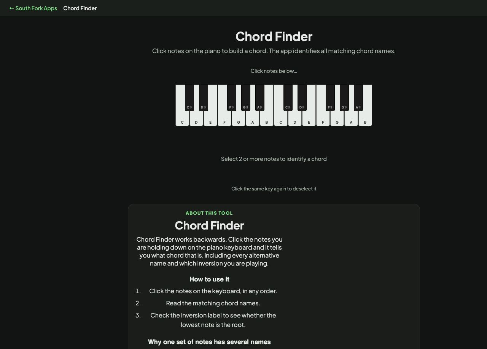

Chord Finder
Click notes on the piano to build a chord. The app identifies all matching chord names.
Click the same key again to deselect it
Chord Finder
Chord Finder works backwards. Click the notes you are holding down on the piano keyboard and it tells you what chord that is, including every alternative name and which inversion you are playing.
How to use it
- Click the notes on the keyboard, in any order.
- Read the matching chord names.
- Check the inversion label to see whether the lowest note is the root.
Why one set of notes has several names
A chord is identified by the intervals between its notes, not by the order you played them. The same three notes can be described from different roots, which is why C, E and G is C major but E, G and C is C major in first inversion.
Some note sets are genuinely ambiguous. A diminished seventh chord stacks four notes each three semitones apart, so it has four equally valid names depending on which note you call the root. The tool lists all matches rather than guessing.
When it helps
- Naming a chord you found by ear on the keyboard.
- Working out what a chord in sheet music actually is.
- Checking whether a voicing you like is a standard chord or something more unusual.
- Understanding inversions by hearing them named as you move the bass note.
Common mistakes
- Assuming there is one right answer. Ambiguous chords legitimately have several names, and context decides which is correct.
- Ignoring the bass note. The lowest note determines the inversion and often changes how the chord functions.
